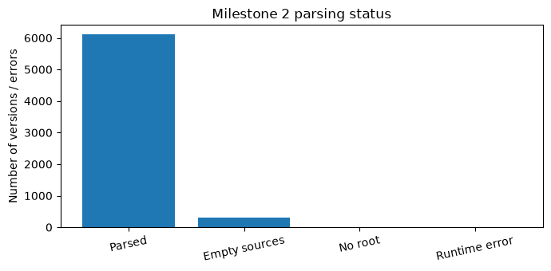
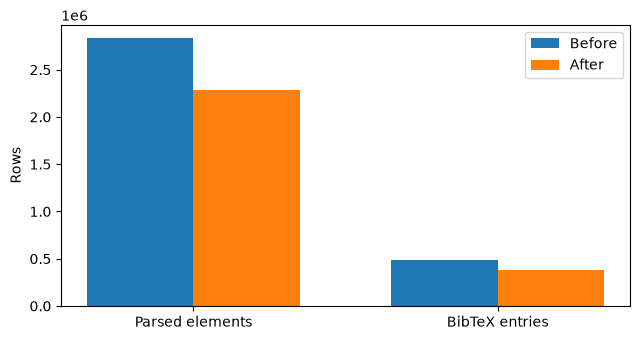
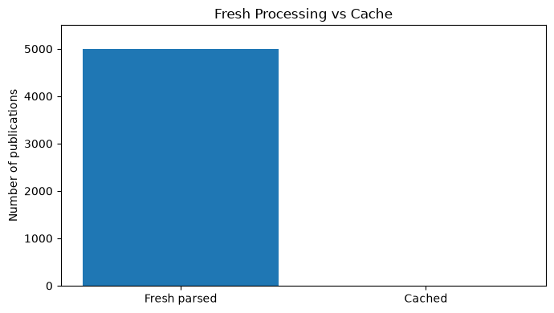

Milestone 2 — Hierarchical Parsing and Standardization#
This page continues after the completion of Milestone 1 with an offline parser of the original TeX/BibTeX source corpus. Values, tables and figures below are computed from actual report_data/milestone2_*.{json,csv} at book compilation, not images or fabricated benchmark statistics.
Assigned range: 2607.13694–2607.18693. Always report processed count alongside coverage rates; a partial prefix is not full coverage.
Dataset coverage and completion status#
Milestone 1: 5,000 discovered publications out of 5,000 assigned IDs.
Milestone 2: All 5,000 assigned publications processed; 6,417 versions in total; 6,105 parsed; 312 empty; 0 without a detected root.
Completion status: The full assigned range was processed, covering 5,000 of 5,000 publications.
1. Architecture and multi-file gathering#
src.milestone2.pipeline.Milestone2Parser inherits Milestone1CorpusReader, which reuses the existing src.crawler.paper_dir() and read_json(). The new Milestone2MemorySampler also inherits src.crawler.MemorySampler, calling super().finish(). No code or original data in Milestone 1 is rewritten.
For every vN, locate the active .tex file containing an uncommented \documentclass, expand uncommented \input / \include commands recursively, reject traversal outside the source folder, stop at \end{document}, and ignore unreachable auxiliary TeX files. Document headings create parent/child relations, while sentences, displayed mathematics, figures and tables are leaves. Nested lists create list → item branches. References are excluded from the content tree. Acknowledgements and unnumbered appendix sections remain in the tree.
Known limits: LaTeX is a macro language; without invoking TeX, dynamically generated includes, conditionals, style-file macro expansions, \includeonly variants and complex custom bibliography macros cannot always be resolved. Such papers should be sampled for manual comparison with a compiled PDF.
2. Cleaning, normalization, citations and identity#
Comment-only includes are ignored. Nonsemantic formatting commands and whitespace are cleaned without changing the Milestone 1 .tex sources. Inline \(…\) / \begin{math} becomes $…$; displayed \[…\], $$…$$, and display math environments become a uniform \begin{equation}…\end{equation} leaf. Sentence boundaries conservatively protect common abbreviations, math, decimals, URLs and command arguments.
BibTeX files requested by the compilation path and inline \bibitem entries are parsed into a consistent entry schema. Across versions, matching DOI/title entries share one canonical citation key; available metadata fields are unioned, and \cite{} keys are rewritten in the parsed output only. Cleaned content identical across versions shares one element ID, while hierarchy carries a version-specific parent edge. Each version keeps an explicit outcome, including empty for legitimate no-source and no_root for detected parsing limitations.
For each publication, the pipeline writes per-paper checkpoints and JSONL tables elements, hierarchy, bibtex, plus versions for root IDs and error/coverage inspection.
from pathlib import Path
import json
import pandas as pd
import matplotlib.pyplot as plt
from IPython.display import display, Markdown
report_data = Path('report_data')
summary_path = report_data / 'milestone2_summary.json'
status_path = report_data / 'milestone2_status.csv'
benchmark_path = report_data / 'milestone2_benchmark_history.json'
benchmark = json.loads(benchmark_path.read_text(encoding='utf-8')) if benchmark_path.exists() else {}
ready = summary_path.is_file() and status_path.is_file()
if ready:
stats = json.loads(summary_path.read_text(encoding='utf-8'))
counts = stats.get('metrics', {})
rows = pd.read_csv(status_path)
display(Markdown(f"**Measured sample: {stats['assigned_count_this_run']:,} publications** "
f"({stats.get('assigned_start')} – {stats.get('assigned_end')})."))
else:
stats, counts, rows = {}, {}, pd.DataFrame()
display(Markdown('**No Milestone 2 measurements have been synchronized yet.** '
'Run `python -m src.milestone2.cli --output data --report ../report_repo` first.'))
Measured sample: 5,000 publications (2607.13694 – 2607.18693).
3. Parsing success, version coverage and data quality#
The denominator is the number of versions present in the selected Milestone 1 subset. empty is a valid no-LaTeX/no-source version; no_root flags incomplete automatic parsing and is not counted as parsed. These counts must be interpreted separately from the Milestone 1 crawling coverage.
if ready:
measurements = [
('Publications selected', stats.get('assigned_count_this_run', 0)),
('Publications processed', counts.get('processed', 0)),
('Unexpected parser errors', counts.get('errors', 0)),
('Total versions selected', counts.get('versions_expected', 0)),
('Versions parsed', counts.get('versions_parsed', 0)),
('No TeX/source versions (empty records)', counts.get('versions_empty', 0)),
('Versions with no detected document root', counts.get('versions_no_root', 0)),
('Parsed/version coverage', round(counts.get('versions_parsed',0) / counts.get('versions_expected',1) * 100, 2) if counts.get('versions_expected') else 0),
]
display(pd.DataFrame(measurements, columns=['Measure', 'Value']))
fig, ax = plt.subplots(figsize=(7,3.5))
names=['Parsed', 'Empty sources', 'No root', 'Runtime error']
vals=[counts.get('versions_parsed',0),counts.get('versions_empty',0),
counts.get('versions_no_root',0),counts.get('errors',0)]
ax.bar(names,vals)
ax.set_ylabel('Number of versions / errors')
ax.set_title('Milestone 2 parsing status')
ax.tick_params(axis='x',rotation=12)
plt.tight_layout();plt.show()
| Measure | Value | |
|---|---|---|
| 0 | Publications selected | 5000.00 |
| 1 | Publications processed | 5000.00 |
| 2 | Unexpected parser errors | 0.00 |
| 3 | Total versions selected | 6417.00 |
| 4 | Versions parsed | 6105.00 |
| 5 | No TeX/source versions (empty records) | 312.00 |
| 6 | Versions with no detected document root | 0.00 |
| 7 | Parsed/version coverage | 95.14 |

4. Before-and-after de-duplication#
An element is identified by cleaned semantic content and type within each publication (not across unrelated publications). References are deduplicated across that publication’s versions, including metadata field union and key remapping. These counts are measurements from the local parser run; they do not imply that textual identity guarantees semantic identity.
if ready:
comp = pd.DataFrame([
{'Type':'Parsed elements', 'Before':counts.get('content_before_dedup',0), 'After':counts.get('content_after_dedup',0)},
{'Type':'BibTeX entries', 'Before':counts.get('references_before_dedup',0), 'After':counts.get('references_after_dedup',0)},
])
comp['Removed'] = comp['Before']-comp['After']
comp['Reduction (%)'] = (comp['Removed'] / comp['Before'].where(comp['Before'] != 0, float('nan')) * 100).round(2)
display(comp)
fig,ax=plt.subplots(figsize=(6.5,3.5))
x=range(len(comp));width=.35
ax.bar([v-width/2 for v in x],comp['Before'],width,label='Before')
ax.bar([v+width/2 for v in x],comp['After'],width,label='After')
ax.set_xticks(list(x),comp['Type'])
ax.set_ylabel('Rows');ax.legend();plt.tight_layout();plt.show()
| Type | Before | After | Removed | Reduction (%) | |
|---|---|---|---|---|---|
| 0 | Parsed elements | 2834259 | 2280571 | 553688 | 19.54 |
| 1 | BibTeX entries | 483550 | 383892 | 99658 | 20.61 |

5. Google Colab CPU-only Benchmark#
This section reports the Milestone 2 fresh parsing benchmark on Google Colab CPU-only.
All 5,000 publications were processed without cached checkpoints.
The previous local cached run is excluded from the official benchmark measurements.
The benchmark includes wall time, average processing time, peak RAM usage, disk footprint and version coverage.
Data source: report_data/Mile2_Colab_CPU_Benchmark.json.
The current JSON was transcribed from Colab output.
For final submission, the original Colab summary.json
is preferable for exact byte-level measurements.
import json
import pandas as pd
import matplotlib.pyplot as plt
from pathlib import Path
from IPython.display import display, Markdown
path = Path("report_data/Mile2_Colab_CPU_Benchmark.json")
bench = json.loads(path.read_text(encoding="utf-8"))
m = bench["metrics"]
processed = int(m["processed"])
fresh = int(m["fresh_parsed"])
cached = int(m.get("cached", 0))
parsed = int(m["versions_parsed"])
empty = int(m["versions_empty"])
no_root = int(m["versions_no_root"])
peak_ram = bench.get("peak_ram_mib")
if peak_ram is None:
peak_ram = bench["peak_ram_bytes"] / 1024**2
disk = bench.get("output_disk_mib")
if disk is None:
disk = bench["output_disk_bytes"] / 1024**2
assert processed == 5000
assert fresh == 5000
assert cached == 0
assert parsed == 6105
assert empty == 312
assert no_root == 0
assert parsed + empty + no_root == m["versions_expected"]
table = pd.DataFrame([
("Publications", processed),
("Fresh parsed", fresh),
("Cached", cached),
("Runtime errors", m.get("errors", 0)),
("Versions expected", m["versions_expected"]),
("Versions parsed", parsed),
("Versions empty", empty),
("Versions no root", no_root),
("Wall time (seconds)", bench["wall_seconds"]),
("Average seconds / paper", bench["avg_seconds_per_publication"]),
("Peak RAM (MiB)", round(peak_ram, 2)),
("Output disk (MiB)", round(disk, 2))
], columns=["Metric", "Measured Value"])
display(Markdown("### Google Colab CPU-only Results"))
display(table)
fig, ax = plt.subplots(figsize=(7, 4))
ax.bar(["Fresh parsed", "Cached"], [fresh, cached])
ax.set_ylabel("Number of publications")
ax.set_title("Fresh Processing vs Cache")
ax.set_ylim(0, 5500)
plt.tight_layout()
plt.show()
if "transcri" in (
bench.get("source", "") + bench.get("description", "")
).lower():
display(Markdown(
"*Note: measurements were transcribed from the Colab "
"output; use the original summary.json for exact values.*"
))
display(Markdown("**BENCHMARK VALIDATION PASSED**"))
Google Colab CPU-only Results
| Metric | Measured Value | |
|---|---|---|
| 0 | Publications | 5000.0000 |
| 1 | Fresh parsed | 5000.0000 |
| 2 | Cached | 0.0000 |
| 3 | Runtime errors | 0.0000 |
| 4 | Versions expected | 6417.0000 |
| 5 | Versions parsed | 6105.0000 |
| 6 | Versions empty | 312.0000 |
| 7 | Versions no root | 0.0000 |
| 8 | Wall time (seconds) | 1047.8150 |
| 9 | Average seconds / paper | 0.2096 |
| 10 | Peak RAM (MiB) | 203.6700 |
| 11 | Output disk (MiB) | 2024.8300 |

BENCHMARK VALIDATION PASSED
6. Reproducibility and limitations#
Re-run the parser with python -m src.milestone2.cli --output data --force --report ../report_repo from source_repo; omit --force to resume from existing per-paper checkpoints. Test first with --max-papers 20. Source inputs and all Mile 1 modules remain read-only. The outputs include data/milestone2/{tables,records_data,summary.json,status.csv}. Submit source-only repositories publicly; the large crawled/parsed corpus is local working data for Milestone 3.
To validate parser accuracy beyond unit tests: manually inspect a stratified sample with no_root warnings, nested macro-rich LaTeX, multiple roots, inline BibTeX entries, and papers with multiple versions; compare against actual rendered document structure. Manual checking was not substituted for automatic statistics here.
7. Final Dataset Validation#
This section validates the final Milestone 2 dataset using the synchronized results generated by the parser.
Validation confirms that all 5,000 assigned publications were processed, covering 6,417 versions in total. The 312 source-free versions remain explicitly recorded as empty rather than being treated as parser failures. All 6,417 versions are accounted for in the final dataset.
from pathlib import Path
import json
import pandas as pd
from IPython.display import display, Markdown
s = json.loads(
Path("report_data/milestone2_summary.json").read_text(
encoding="utf-8"
)
)
m = s["metrics"]
validation = pd.DataFrame([
("Publications", m["processed"]),
("Total versions", m["versions_expected"]),
("Successfully parsed", m["versions_parsed"]),
("Empty source versions", m["versions_empty"]),
("No detected root", m["versions_no_root"]),
], columns=["Metric", "Value"])
display(validation)
assert (
m["versions_parsed"]
+ m["versions_empty"]
+ m["versions_no_root"]
) == m["versions_expected"]
display(Markdown(
"**Validation passed:** All 6,417 versions are accounted for."
))
| Metric | Value | |
|---|---|---|
| 0 | Publications | 5000 |
| 1 | Total versions | 6417 |
| 2 | Successfully parsed | 6105 |
| 3 | Empty source versions | 312 |
| 4 | No detected root | 0 |
Validation passed: All 6,417 versions are accounted for.